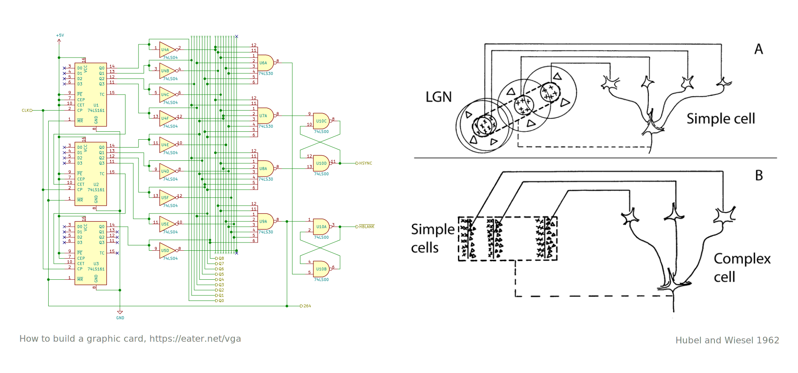
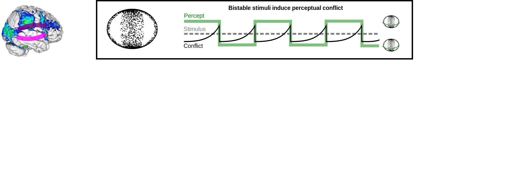
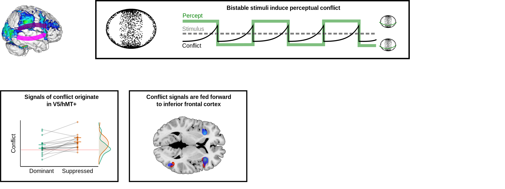
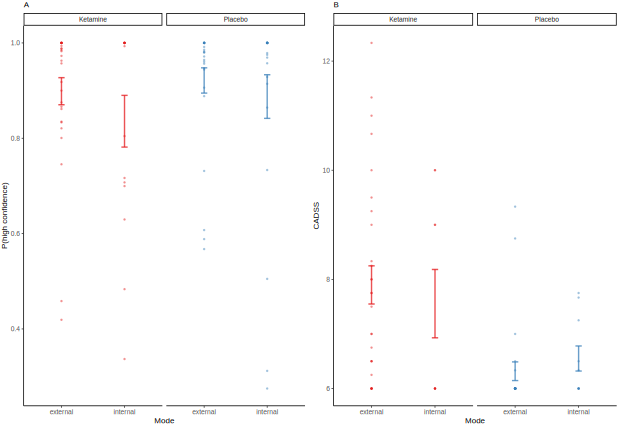

External and internal modes of sensory processing
Veith Weilnhammer, MD/PhD
Helen Wills Neuroscience Institute, UC Berkeley
2 Questions
- How are unambiguous conscious experiences generated from ambiguous sensory information?
- What causes psychotic experiences?
Feedforward processing

- Individual frames are processed independently
Feedforward processing

- Individual frames are processed independently
Natural environments

- Individual frames are strongly autocorrelated
Natural environments

- One frame predicts the next
Feedback

- Predictive coding compresses the input and saves energy
Feedback

- There is extensive feedback connectivity within the brain
Circularity
- How to balance stability with sensitivity to change?
Bistable perception

Bistable perception

Bistable perception

Bistable perception

fMRI + Lesions

fMRI + Lesions

fMRI + Lesions

fMRI + Lesions

fMRI + Lesions

Neural correlates
- Prefrontal cortex gates the access of sensory information into conscious experience.
- How much conflicting information do you need?
Graded Ambiguity

Serial Dependencies

- Stimulus- and history-congruence are autocorrelated.
Serial Dependencies

- Internally-biased processing suppresses stimulus sensitivity.
Perceptual Modes

- Are between-mode fluctuations a general phenomenon in perceptual decision-making?
Confidence Database

- 4500 humans, 22 million choices
Confidence Database

- Quadratic relationship to RTs and confidence
IBL Database

- 165 mice, 1.5 million choices
Bimodal inference

- Leaky accumulation of evidence + fluctuating weights
- Alternatives: GLM-HMM (Ashwood et al. Nat. Neuroscience 2022), Psytrack (Roy et al. Neuron 2024), Semi-HMM (Bruins et al. BioRxiv 2023)
Behavior and Function

- Between-mode flucutations as a solution to credit-assigment problems in recurrent neural networks
- Can bimodal inference explain psychotic experiences?

- Increase in external mod during NMDAR antagonism and in Scz
- Intervals of external mode as a correlate of individual psychotic experiences?
Next Questions
- Computational function of between-mode fluctuations
- Neural correlates of internal and external modes
- The role of neuromodulators in between-mode fluctuations
Thanks a lot for your attention!
References
Weilnhammer, Stuke, Hesselmann, Sterzer, Schmack. A Predictive Coding Account of Bistable Perception. PLOS Computational Biology 2017.
Weilnhammer, Lukas, Eckert, Stuke, Heinz, Sterzer. Psychotic Experiences in Schizophrenia and Sensitivity to Sensory Evidence. Schizophrenia Bulletin 2020.
Weilnhammer, Fritsch, Chikermane, Eckert, Kathak, Stuke, Sterzer. An Active Role of Inferior Frontal Cortex in Conscious Experience. Current Biology 2021.
Weilnhammer, Chikermane, Sterzer. Bistable perception alternates between internal and external modes of sensory processing. iScience 2021.
Weilnhammer, Stuke, Standvoß, Sterzer. Sensory processing in humans and mice fluctuates between external and internal modes. PLOS Biology 2023.